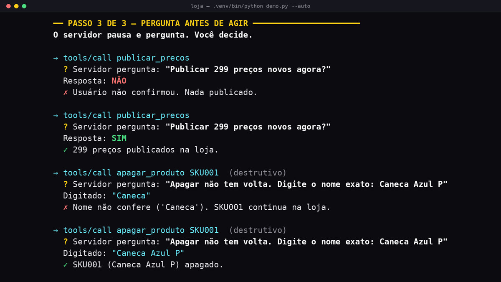

Você quer deixar a IA trabalhar nos seus programas sem explicar tudo de novo, sem ficar esperando e sem medo de ela fazer algo que não tem volta. MCP 2 na prática é um kit gratuito e aberto que mostra isso numa lojinha de mentira com 300 produtos. O MCP (Model Context Protocol) é o padrão aberto que liga a IA ao resto do software; em 24/11/2026 ele ganhou o manual que vem junto, o trabalho em segundo plano e a pergunta antes de agir. Serve para quem usa agentes como o Claude e para quem constrói conectores. “MCP 2.0” é só o apelido que circula: tudo aqui vem do anúncio da Anthropic e do blog oficial do MCP.
Da IA que você vigia à IA que te chama na hora certa
Três mudanças, cada uma provada num passo do kit (veja Como funciona).
Você é o manual, o relógio e o freio
- Cola as regras da loja no chat toda vez (“margem mínima, nunca abaixo do custo…”).
- Pede para atualizar 300 preços e a conversa fica parada até acabar.
- A IA publica ou apaga e você só descobre depois.
A ferramenta traz o manual e pede licença
- O manual da loja vem junto com o conector e só entra quando precisa (passo 1).
- O trabalho longo vira uma tarefa em segundo plano; você continua conversando (passo 2).
- Antes de publicar ou apagar, a ferramenta para e pergunta a você (passo 3).
/skills).Fontes oficiais, não boato
O kit só usa o que foi publicado pela Anthropic e pelo projeto MCP. Onde algo ainda não saiu, a página diz.
📣 Anúncio da Anthropic (24/11/2026)
Apresenta as quatro novidades: o manual que vem junto (Skills over MCP), o trabalho em segundo plano (Tasks), a pergunta antes de agir (Elicitation) e o envio de arquivos (File Uploads, ainda não lançado). Diz que já são mais de 10.000 conectores para o Claude e mais de 700 milhões de downloads de SDK por mês.
🎂 Blog do MCP: “MCP faz 2 anos”
Antes, cada empresa construía uma ponte separada para cada IA; com o MCP, um conector serve para toda IA que fala o padrão. OpenAI, Google e Microsoft adotaram, e o MCP fica na Agentic AI Foundation, sob a Linux Foundation: nenhuma empresa é dona.
📘 Documentação oficial
A página do MCP no Claude Code diz como ver os manuais que vêm dos conectores. A especificação do MCP descreve cada peça para quem constrói (skills, tasks e elicitation).
Nas palavras do anúncio: o Claude passa a trabalhar com um servidor como trabalha com outro agente, aprendendo com ele, delegando a ele e trocando informação e arquivos no caminho.
Você usa agentes ou constrói conectores?
Escolha a sua porta. As duas usam a mesma lojinha.

🧭 Quem usa agentes
Ganha: o Claude já chega sabendo as regras da ferramenta, porque a empresa que fez o conector escreve o manual e, quando melhora, você recebe sozinho. O trabalho longo não trava a conversa, e nada que não tem volta acontece sem o seu sim.
Como ver no Claude Code: digite /mcp para ver os conectores ligados e /skills para ver os manuais que vieram deles (o nome aparece como conector:manual, por exemplo loja:promocao). Ligado por padrão nos planos Pro, Max e Ultra.

🛠️ Quem constrói servidor MCP
Ganha: um servidor pequeno e aberto, em Python, com as três peças funcionando, testes que rodam contra o servidor de verdade e os nomes oficiais de cada peça. Os limites estão escritos, para você não descobrir na produção.
O que tem lá: como o servidor lista e entrega o manual, como devolve um tíquete para o trabalho longo e como pergunta no chat ou manda a pessoa para um site.
Como isso muda o seu dia
🏷️ A promoção de Black Friday
Hoje: você lembra a IA da margem mínima, do arredondamento e do “nunca abaixo do custo” em cada conversa.
Com o kit: o manual da loja traz as três regras e a IA o abre só quando vai mexer em preço.
⏳ Atualizar 300 preços
Hoje: a conversa fica parada até a última etiqueta.
Com o kit: o servidor responde na hora com um tíquete, faz o trabalho por trás e avisa quando termina, com quantos produtos travaram na margem.
🛑 Publicar ou apagar
Hoje: você confia que a IA não vai apertar o botão errado.
Com o kit: “Publicar 299 preços novos agora?” espera o seu sim. Para apagar, você precisa digitar o nome exato do produto.
🌍 Nas ferramentas de verdade (exemplos do anúncio)
- Manual junto: Shopify (montar e atualizar a loja de ponta a ponta), HubSpot (configurar cliente novo), Atlassian (contexto da empresa).
- Segundo plano: ZoomInfo, onde a pesquisa de contas e contatos que levava vários pedidos vira um trabalho só.
- Pergunta antes: Supabase mostra o custo antes de criar um projeto pago, Railway pergunta antes de remover um serviço e o GitHub exige digitar o nome do repositório antes de um agente apagá-lo.
Entenda em poucos minutos

Vídeo em breve
O vídeo explicativo entra aqui assim que for publicado. Enquanto isso, as três telas do demo estão em Como funciona.
Três peças, três passos do demo

O manual vem junto com a ferramenta
Beta pública
O conector entrega, além dos botões que a IA pode apertar, o manual de como usá-los, escrito pela própria empresa da ferramenta. A IA só abre o manual quando precisa, então ele quase não ocupa espaço na conversa.
No kit, o manual da loja diz: margem mínima de 15% sobre o custo, nunca abaixo do custo e preço terminando em ,90. O demo confere que o manual chegou inteiro.

O trabalho demorado vai para segundo plano
Disponível
Em vez de travar a conversa, a ferramenta responde na hora “recebi, estou trabalhando” e segue sozinha. A IA confere de tempos em tempos e te avisa quando acaba.
No kit, um desconto de 20% em 300 produtos vira uma tarefa: o andamento aparece de 50 em 50 até “pronto”, com 299 preços novos no rascunho e 43 travados na margem.
A ferramenta pergunta antes de agir
Disponível
No meio do trabalho, a ferramenta para e pergunta a você. Pode ser uma pergunta no próprio chat (sim ou não, digite o nome) ou um link para o site da empresa, para senha ou pagamento: assim o dado sensível não passa pelo chat.
No kit: “Publicar 299 preços novos agora?”. Com “não”, nada é publicado; com “sim”, os preços vão para a loja. Para apagar, digitar só “Caneca” não basta: precisa ser “Caneca Azul P”.

O que o kit não promete
- A loja é de mentira: 300 produtos fictícios, e o servidor trabalha numa cópia. Ele não se liga à sua loja real.
- As tarefas ficam só na memória do servidor: se ele reiniciar, somem.
- No Claude Code, o kit provou a conexão e o manual aparecendo; a tarefa e a pergunta foram provadas pelo demo e pelos testes (veja A prova).
O que ainda não saiu
📎 Envio de arquivos (File Uploads)
Mandar PDF, planilha ou imagem direto para a ferramenta sem encher a conversa. O anúncio diz “em breve”, sem data. O kit só menciona.
📘 O manual que vem junto
Pode mudar. Precisa do Claude Code v2.1.331 ou mais novo e não funciona no modo sem tela (claude -p). No plano Team, só depois que o administrador ativar.
⏳ Segundo plano e ❓ pergunta antes
Já valem nos planos Pro, Max e Ultra. Para Team e Enterprise, o segundo plano ainda está chegando.
E o nome: “MCP 2.0” não é oficial. É o apelido de quem acompanha para o salto de 24/11/2026; o padrão continua se chamando MCP.
Você não instala nada à mão
Abra um agente de IA no seu computador
Agente é a IA que, além de conversar, mexe em arquivos e roda programas, sempre pedindo licença. Para ver o manual que vem junto, use o Claude Code v2.1.331 ou mais novo. O Codex também consegue baixar e rodar o demo.
Cole o pedido
A IA lê o kit, explica as novidades em linguagem simples e diz quais conectores seus ganham com elas.
Leia o repositório https://github.com/inematds/mcp2-na-pratica (o README, o COMO-LIGAR-NO-CLAUDE.md e a pasta exemplos). Me explique em linguagem simples as três novidades do MCP que ele mostra (o manual que vem junto, o trabalho em segundo plano e a pergunta antes de agir) e o que ainda não foi lançado. Depois olhe os conectores MCP que eu já uso e me diga quais ganham algo com essas novidades. Não instale nem mude nada antes do meu sim. Com o meu sim: baixe o kit numa pasta separada, crie o ambiente, rode os testes e o demo, ligue o servidor “loja” no Claude Code no escopo local, me mostre onde ver /mcp e /skills e, no fim, me diga como tirar.
Diga sim ao que fizer sentido
Veja o demo rodar os três passos. Se quiser, abra o Claude Code, digite /skills e procure loja:promocao. Quando terminar, peça para a IA tirar o servidor da loja.
🌐 Quer só usar, sem instalar nada?
Não há versão online do kit. As novidades em si já chegam pelos conectores oficiais no Claude, nos planos Pro, Max e Ultra (conferido no anúncio de 24/11/2026). O kit serve para você ver as três funcionando por dentro.
⬇️ Onde baixar?
Não há instalador: é uma pasta com um programa pequeno em Python, que a sua IA prepara. Baixe o ZIP do kit ou veja o repositório.
🧑💻 É técnico?
Pré-requisitos, arquivos, o que o SDK já faz e o que o kit escreveu à mão estão no README.
As três peças pelo nome oficial
Esta é a única parte técnica do guia. Cada termo vem com a frase comum ao lado; o resto está no README.
📘 Manual junto: skills/list e skills/get
“O servidor diz quais manuais tem e entrega o que for pedido.” É a extensão io.modelcontextprotocol/skills; os arquivos do manual saem por resources/read. No kit, o manual promocao vem com uma lista de arquivos com tamanho e SHA-256 (uma impressão digital do arquivo), e o cliente confere. No Claude Code o nome aparece como <servidor>:<skill>.
⏳ Segundo plano: taskId e tasks/get
“O servidor devolve um tíquete na hora e o cliente pergunta como está.” Os estados são working, completed, failed, cancelled e input_required. Cliente que não declara a extensão recebe o resultado do jeito antigo (espera e devolve).
❓ Pergunta antes: elicitation form × url
“Form” é a pergunta no chat: sim ou não, digite o nome. “Url” manda a pessoa para o site da empresa (senha, pagamento), e o dado não passa pelo chat. O kit usa o form; o url só é citado, porque a lojinha não pede dado sensível.
🏪 O servidor do kit
servidor.py é um servidor MCP “loja” que fala pela entrada e saída do terminal (stdio): o manual promocao, a tool atualizar_precos (vira tarefa), publicar_precos (pergunta sim ou não) e apagar_produto (pede o nome exato). O SDK Python mcp 2.3.0 não traz as extensões de skills e tasks prontas: o kit as escreve à mão.
Rodar em 3 comandos (Python 3.10+)
git clone https://github.com/inematds/mcp2-na-pratica cd mcp2-na-pratica python3 -m venv .venv && .venv/bin/pip install -r requirements.txt .venv/bin/python demo.py --auto
Sem --auto, o demo pergunta para você. Testes: .venv/bin/python -m pytest -q.
Ligar no Claude Code
claude mcp add loja -- "$PWD/.venv/bin/python" "$PWD/servidor.py" claude mcp list # loja: … - ✔ Connected
Dentro do claude: /mcp → loja e /skills → loja:promocao. Com --scope project ele fica “Pending approval” até você abrir o claude na pasta; o escopo padrão (local) conecta direto. Para tirar: claude mcp remove loja.
Limites honestos: as tarefas ficam só na memória do servidor, o ttlMs é informado mas não apaga nada sozinho, e tasks/update só confirma o recebimento. O kit fala a versão 2026-07-28 da especificação, a “sem estado”: pedido e resposta simples, que deixa o servidor rodar até em serverless. Detalhes em README e COMO-LIGAR-NO-CLAUDE.md.
Rodado de verdade, em 26/11/2026
- Demo: o manual chegou e foi conferido (tamanho e impressão digital batem); a tarefa de 300 produtos terminou com 299 preços novos e 43 travados na margem; com “não”, nada foi publicado; com “sim”, 299 preços foram para a loja; apagar com “Caneca” foi recusado e com “Caneca Azul P” funcionou.
- Testes: 17 testes rodam contra o servidor de verdade e todos passaram.
- Claude Code v2.1.332 (Linux): o servidor “loja” conectou pela versão 2026-07-28, mostrou “3 tools · 2 resources · 1 skill”, e o
/skillslistou loja:promocao com cerca de 30 tokens, com o aviso “Skills from MCP servers are in beta”.
O que a prova não mostra: no Claude Code não pedimos ao modelo para rodar as ferramentas, então lá não vimos a tarefa em segundo plano nem a pergunta. Essas duas estão provadas pelo demo e pelos testes.
Saídas completas no repositório: saida-demo.txt e prova-claude-code.txt.
Antes de você perguntar
Preciso programar?
Para ver funcionando, não: você cola o pedido do “Como começar” e a sua IA faz o resto. Para construir o seu próprio servidor, sim, e o kit em Python é o ponto de partida.
Custa alguma coisa?
O kit é grátis e aberto (licença MIT). As novidades no Claude estão ligadas nos planos Pro, Max e Ultra, que são pagos.
“MCP 2.0” é o nome oficial?
Não. É o apelido que circula para o pacote de 24/11/2026. O padrão continua sendo o MCP, que fez 2 anos em novembro de 2026.
Funciona com outras IAs?
O MCP é aberto e foi adotado por OpenAI, Google e Microsoft. Cada aplicativo de IA precisa aceitar as peças novas; o kit foi testado no Claude Code. O demo roda sozinho no terminal, com qualquer agente.
Mexe na minha loja de verdade?
Não. A loja é fictícia e o servidor trabalha numa cópia dos 300 produtos.
Posso mandar arquivo para a ferramenta?
Ainda não. O envio de arquivos (File Uploads) foi anunciado como “em breve”, sem data.
E você, que ferramenta gostaria que parasse e te perguntasse antes de agir? Venha contar e pegar este e outros kits grátis no inema.club, direto na internet.